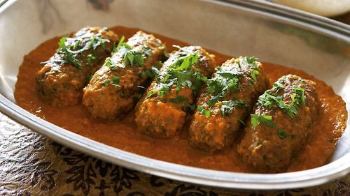

Kofta

Ingredients
Servings for Four Peoples.
- 500 gm minced mutton
- 2 teaspoon ginger paste
- 2 pinches asafoetida
- 1 cup mustard oil
- 1 inch cinnamon stick
- 1 cup water
- 4 clove
- 2 green cardamom
- 1 large grated onion
- 1 1/2 teaspoon red chilli powder
- 3 teaspoon garlic paste
- 1/4 cup yoghurt (curd)
- 3 crushed black cardamom
- salt as required
- 1/2 teaspoon garam masala powder
- 2 bay leaf
- 1 teaspoon turmeric
- 2 tablespoon gram flour (besan)
Method
- Prepare the mutton mixture:
Boil the mutton for koftas in a pressure cooker with a little salt and 1 cup water. Once the mutton is soft
and if any water remains, dry it on low flame. Now add 1 tsp each ginger-garlic paste, red chilli powder, 1
tsp curd, besan, a pinch of turmeric and mix well. Use your hands to knead the koftas so that they become
soft. Now make round, smooth balls. You can add more besan if the mixture is a bit too moist. Keep the
koftas aside.
- Shallow fry the koftas:
Heat oil in a non stick wok or pan and slowly drop the koftas and fry them on low flame till golden. Put in
an absorbent paper and keep aside.
- Prepare the gravy:
Next, put a kadhai on medium flame and heat 4- tablespoons of oil in it. Add cinnamon, cardamoms, clove and
heeng (asafoetida). When the spices start spluttering, add the grated onion and cook till it turns pink. Now
add the garlic paste and sauté till the raw smell disappears. At this point add ginger, red chilli powder
and turmeric along with salt and mix well. Keep the flame low or the spices will burn. Now beat the curd
well so that no lumps remain and add it to the spice mixture. Keep stirring it continuously or the curd will
curdle. Now add 1 to 2 cups water, depending on how thick you want your gravy. Now add the garam masala.
Keep stirring till the gravy comes to a boil.
- Add the spices to the gravy:
Add the bay leaves in the gravy (you can also add them right at the beginning where you are adding the whole
garam masalas). Slowly drop in the koftas now. Keep the flame low.
- Allow the koftas to simmer:
Lower the flame and allow the koftas to simmer for another 6-7 minutes. You will see a thin layer of oil on
top which means the gravy is ready. Serve it hot with rice or butter naan.
Tips
- To enhance the taste and flavour of this dish, dry roast the whole spices, grind them and add it to the
gravy.
- To make the dish rich and creamy, you can add some fresh cream. This will not only accentuate the taste but
at the same time it will make it creamy in texture and mellow down the ...
- You can also use coconut cream or coconut milk in the place of fresh cream.
- You can also precook your mutton koftas and then add it to the gravy to save time.